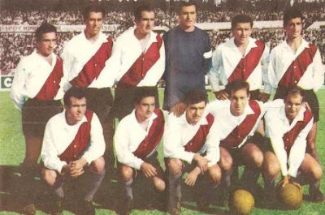
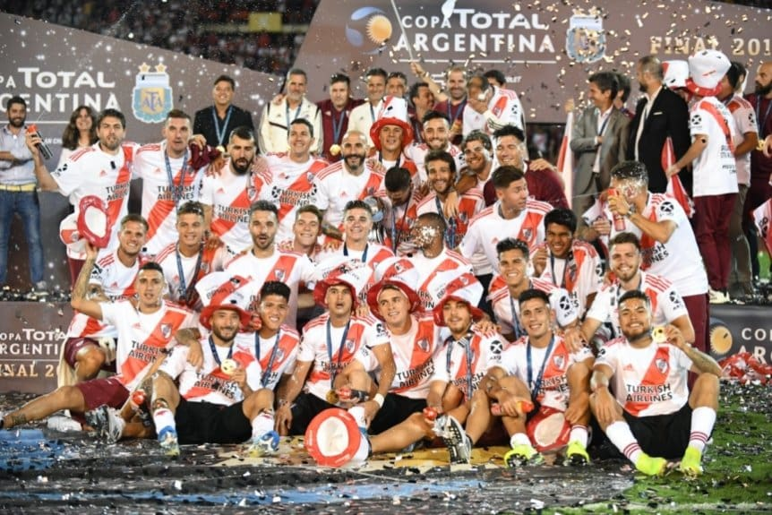
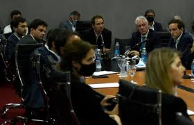
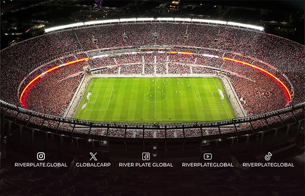
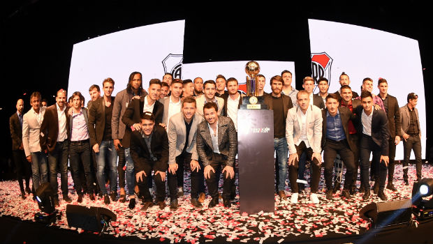

Historia
El Club Atlético River Plate fue fundado el 25 de mayo de 1901 en el barrio de La Boca, fruto de la fusión de los clubes Santa Rosa y La Rosales. Su nombre surgió al ver la inscripción “The River Plate” en unas cajas en el puerto. En 1908 logró el ascenso a Primera División y en 1923 se mudó a Núñez, donde más tarde se ubicaría su estadio. En 1938 inauguró el Estadio Monumental, hoy el más grande de Argentina, con capacidad superior a 83.000 espectadores. Durante la década de 1940 nació “La Máquina”, un equipo histórico conformado por Muñoz, Moreno, Pedernera, Labruna y Loustau, que se destacó por su fútbol ofensivo y elegante, consolidando la gran rivalidad con Boca Juniors. En las décadas siguientes, River mantuvo protagonismo en el fútbol argentino, aunque atravesó una sequía de títulos entre 1957 y 1975, que terminó con Ángel Labruna como director técnico. En 1986 alcanzó su primera gran gloria internacional al ganar la Copa Libertadores y la Copa Intercontinental frente al Steaua Bucarest, con figuras como Alonso y Francescoli. En los años 90, bajo la conducción de Ramón Díaz, el club vivió otra era dorada, conquistando múltiples títulos locales y la Copa Libertadores 1996, con ídolos como Ortega, Gallardo, Crespo y Salas. El siglo XXI comenzó con éxitos, pero hacia fines de la década el club sufrió problemas institucionales y deportivos que culminaron en el descenso a la B Nacional en 2011. Un año después, River regresó a Primera y en 2014 inició una etapa histórica con Marcelo Gallardo como entrenador, obteniendo dos Copas Libertadores (2015 y 2018), esta última en la recordada final en Madrid frente a Boca Juniors, además de la Copa Sudamericana, la Recopa y varios títulos nacionales. Desde 2023, Martín Demichelis conduce al equipo, que sigue siendo protagonista y es el club argentino con más títulos de liga (38 hasta 2023) y uno de los más laureados a nivel internacional.

Campeonatos
River Plate, fundado en 1901 en La Boca, es uno de los clubes más grandes y exitosos de Argentina. Se mudó a Núñez en 1923 y en 1938 inauguró su estadio, el Monumental, el más grande del país. En los años 40 formó “La Máquina”, un equipo histórico por su juego ofensivo. A lo largo de su historia, contó con grandes ídolos como Ángel Labruna, Enzo Francescoli, Ariel Ortega y Marcelo Gallardo. Tácticamente, River se destacó con formaciones ofensivas como el 4-3-3 y el 4-2-3-1, adaptándose a diferentes épocas y estilos. Es el club con más títulos nacionales, con 38 campeonatos de liga y múltiples copas nacionales, además de 12 títulos internacionales, incluyendo 4 Copas Libertadores y una Copa Intercontinental. Su estadio, el Monumental, fue sede de la final del Mundial 1978 y de momentos históricos del fútbol sudamericano. Además, a través de la Fundación River Plate, el club realiza acciones solidarias enfocadas en la educación, la inclusión social y el deporte para comunidades vulnerables. En definitiva, River es un símbolo del fútbol argentino, reconocido por su historia, sus triunfos y su compromiso social.
Jugadores y Formación
Desde sus inicios se caracterizó por un estilo de juego ofensivo y elegante. A lo largo de su historia, ha contado con grandes figuras que marcaron época. Entre los jugadores más recordados se encuentran Ángel Labruna, máximo goleador del club con 317 goles y símbolo de “La Máquina” de los años 40 junto a Muñoz, Moreno, Pedernera y Loustau; Bernabé Ferreyra, el potente delantero de los años 30; Alfredo Di Stéfano, quien brilló antes de su consagración internacional; Amadeo Carrizo, arquero revolucionario; Norberto “Beto” Alonso, clave en los títulos de los 70 y 80; Enzo Francescoli, ídolo uruguayo de los 80 y 90; Ariel Ortega, habilidoso delantero de los 90 y 2000; Hernán Crespo, artillero de la Copa Libertadores 1996; Marcelo Gallardo, figura como jugador y como entrenador; y Gonzalo “Pity” Martínez, autor del gol histórico en la final de Madrid 2018. En cuanto a la táctica, River ha variado su formación a lo largo de las décadas, aunque siempre mantuvo el ataque como prioridad. En los años 40, “La Máquina” popularizó el 4-3-3, con un mediocampo creativo y delanteros letales. En las décadas de 80 y 90 predominó el 4-4-2, con defensa sólida y volantes creativos. Durante la era de Ramón Díaz se utilizó con éxito el 4-3-1-2, con un enganche como Gallardo u Ortega alimentando a dos delanteros. Con Marcelo Gallardo como técnico, el esquema evolucionó a variantes como el 4-1-4-1 o 4-2-3-1, con presión alta, laterales ofensivos y mediocampistas dinámicos como Ponzio, Nacho Fernández y el “Pity” Martínez. Este estilo, junto con la jerarquía de sus jugadores, consolidó a River como el club con más títulos de liga en Argentina y uno de los más ganadores en el continented
Dirigentes
A lo largo de su historia, River tuvo presidentes y dirigentes claves como Antonio Liberti (quien impulsó la construcción del Monumental) y Rodolfo D'Onofrio (gestor de la exitosa etapa 2014-2021). Actualmente el presidente es Jorge Brito.

La Cancha
El Estadio Monumental, oficialmente llamado Estadio Mâs Monumental por cuestiones de patrocinio, es la sede del Club Atlético River Plate y el estadio más grande de Argentina. Está ubicado en el barrio de Núñez, en la ciudad de Buenos Aires, sobre la Avenida Figueroa Alcorta. Fue inaugurado el 26 de mayo de 1938 con un partido amistoso frente a Peñarol de Uruguay. Su construcción se realizó en un terreno donado por el gobierno nacional y, en sus primeras décadas, fue remodelado en varias ocasiones para ampliar su capacidad y modernizar sus instalaciones. En sus orígenes tenía forma de herradura, ya que uno de sus lados no estaba cerrado. En 1978, para el Mundial de Fútbol que se disputó en Argentina, se completó la estructura, alcanzando una capacidad cercana a las 76.000 personas. Entre 2020 y 2023, River realizó una importante remodelación que incluyó nuevas tribunas más cercanas al campo de juego, butacas en todos los sectores, mejoras en accesos y tecnología, y una ampliación que llevó su capacidad a más de 83.000 espectadores, convirtiéndolo en el estadio con mayor aforo de Sudamérica.
 El Monumental ha sido escenario de momentos históricos del fútbol argentino: albergó la final del Mundial 1978 donde la Selección Argentina se consagró campeona, múltiples finales de Copa Libertadores y Superclásicos contra Boca Juniors, así como recitales de artistas internacionales. El campo de juego cuenta con césped híbrido (natural y sintético) para mejorar su resistencia, y el estadio posee vestuarios modernos, palcos VIP, un restaurante con vista al campo y museo propio donde se exhiben trofeos y recuerdos de la historia de River
Fundacion
El Club Atlético River Plate desarrolla su labor solidaria principalmente a través de la Fundación River Plate, creada oficialmente en 2012 con el objetivo de utilizar el deporte, la educación y la inclusión social como herramientas para mejorar la vida de personas y comunidades en situación de vulnerabilidad. La fundación impulsa programas en cuatro ejes principales: Educación – Otorgan becas, apoyo escolar, talleres y capacitaciones, tanto para jóvenes como para adultos. También fomentan la continuidad escolar y el aprendizaje de oficios. Inclusión social – Realizan actividades deportivas, recreativas y culturales en barrios carenciados, hospitales y comedores comunitarios. Solidaridad en emergencias – Organizan campañas de recolección de alimentos, ropa, útiles y donaciones para personas afectadas por catástrofes naturales o crisis sociales. Promoción del deporte – Llevan adelante escuelas y clínicas de fútbol para niñas, niños y adolescentes, transmitiendo valores como el trabajo en equipo, la disciplina y el respeto. Entre sus proyectos más reconocidos se encuentran "Pasión por Educar", que combina deporte y educación; "Puentes de River", que lleva actividades y donaciones a comunidades vulnerables en todo el país; y "Juntos Somos Más", orientado a la igualdad de oportunidades. Además, la Fundación trabaja en alianza con otras ONGs, empresas y organismos internacionales para ampliar su impacto. La presencia solidaria de River no se limita a la fundación: el club también organiza acciones benéficas junto a hinchas y filiales, como colectas masivas y voluntariado, reforzando su compromiso social más allá del fútbol.
Galería de Fotos

Video Destacado
Contacto
Sitio oficial: www.cariverplate.com.ar
Dirección: Av. Figueroa Alcorta 7597, Buenos Aires, Argentina
Teléfono: +54 11 4789-1200